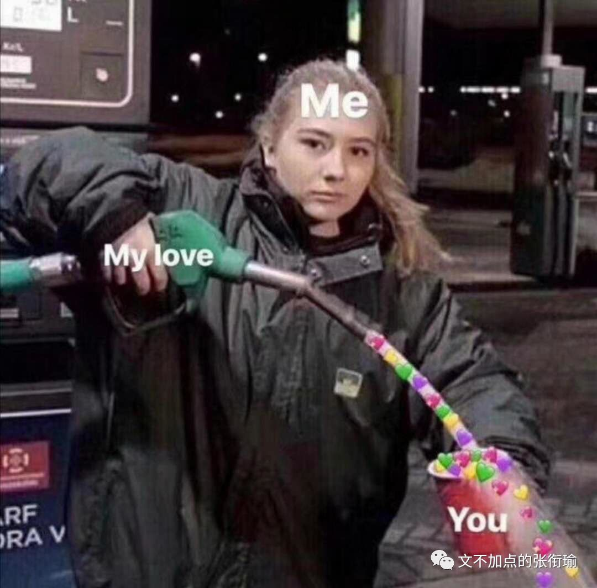

张衔瑜的第103篇推文
共计1984个字
一千两百公里，是武汉到北京的距离。

京广这条高铁线，我不止一次坐过。
长沙往返北京、武汉往返大连、武汉往返北京、武汉往返长春。
每次都完整地穿过了河南全境，却从未落地。
信阳、驻马店、漯河、许昌、郑州、新乡、鹤壁和安阳。
进了河北，则是邯郸、邢台、石家庄和保定。
这就和我知道从长沙到武汉，闭着眼睛都能想起来是汨罗东、岳阳、赤壁、咸宁北。
她说她喜欢郑州冬天的阳光，巷子里飘满煤炉的味道。
雾气穿过她年轻的脖子，直到今天都没有散去。
有些歌，听着听着就没了，只变成了旋律还留着。

减压是有一整套流程的。
实在是太累了的时候，就可以去写点什么，不管写什么都是可以的；
然后过几天，再又累了的时候，把荧光笔拿出来，把自己觉得之前写的好的不好的拿荧光笔画一画、标出来，自我欣赏或是自我批评；
当这一页纸全部用荧光笔涂满，连纸张留白的部分都赏析完毕了的时候，就点上一把火去烧水洗澡。
连减压都有一套流程，做得这么精致、熟练而自然。像做久了引体向上的人，手指和手掌相连部位的老茧，厚实的保护。

我觉得搞笑的是：我竟然会因为一些原本就是笑话的事情，而并不以搞笑的方式对待；不光笑不出来，而且越来越觉得糟心；更搞笑的是，在不同的时间还会出现镜像翻转，就像是左手讥讽右手，邻里隔壁的泼水节打翻了我家的热锅冷油；而事实上，我并不觉得这些很搞笑，这才是令我觉得搞笑的。
所以人们生活着、生活着，妥协、衰老。
空气刘海，如果缺氧的话会怎么样？
油腻腻的高附加值产品就会来浸润表面，让一切不按规矩昂起头的部分都只好俯首称臣。
好看的锁骨千篇一律，有趣的肚腩弹来弹去。
最近在路上碰到朋友，不是问我怎么脸这么大是不是没睡好，就是问我一点笑容都没有最近是怎么了（摊手
如何早睡？不要熬夜。
这就像纯粹理性批判，是完全一点用也没有的随缘扯淡，和留白是一个效果。兴许留白还好一点，可以揣测或者脑内白的内容，但是涂彩之后，是一点办法也没有。
你知道爱情和外卖的区别吗？
爱情可以迟到，但是外卖，不，可，以！！！
这有什么好说的，有些人连双标是什么意思，旨用在什么样的情境都不知道就开始出门献宝。一直以吐槽而闻名于世的张衔瑜竟然，一下不知道从哪里说起。
逻辑吐槽太难了一点，那就只好让基础教育这个背锅侠来背一背。
有些话说出来，就是纯粹无聊而已。
你是可爱的人，我是可爱。
这和：
买了一颗草莓回来，把草莓上所有的黑头都去掉；
买了一支铅笔和一个削笔刀回来，先削到手指长，再削到指节长，最后削到指甲盖长，扔掉；
把一页纸上，所有全封闭的图形里，比如“如”字的“口”、“的”字里面“日”的部分，全部涂成黑色。
：和些事情和土味无聊没什么区别，就是认真了一点。
那么我起初骗自己的时候也以为，学一门理学、写一篇论文、参加一个夏令营也不过是太无聊了才来做的事。
后来做起来之后才发现，一切都变得不一样了起来呢。
最近发现华为手机实在是很有城府，阴谋都藏在暗地里（废话不然还阳谋不成）。
有个机制我实在没有搞懂，不知道你们的手机是不是也会这样，就是在学习的时候，手机自然而然地就跑到了你的手里来。
这实在是很令人费解，究竟是用什么来作为我是不是在学习的判据，又是用什么方法突然跑到了我的手里来？
我搞不懂这些，正如我不知道更久远以前说的那些事。
拿鸡毛当令箭，意思是有些人拿一些明显是用来戏谑的话，却作古正经地来和我说。
曾经我没得选，现在只想做个好人。
滑稽！滑稽！以前没得选，现在也选不了。世界，公平而守恒，种下希望，就会收获失望。

冷门专业自然有冷门的道理，这倒并不以学校好坏为转移。
流行性错误认知就说，只要是好的学校，不管读什么都可以；啊你现在拿一个好学校的学位，以后出去了也会有promised future。滑稽！滑稽！所以我打了删除线。
反倒是好学校出去的人，在这种“普遍错误”的认知影响下，更加走不出去。
往高了走，走不上去，这放到哪里都可以被理解。毕竟强中自有强中手，在普遍自卑的次生思维产物里边，很容易发现。
向下兼容只存在于理论上，并不能实践。
换一种说法，本来就是很一般的公司，如果收到了一封绝好的简历，按正常地来说会觉得自惭形秽。这里的庙太小，安不下一尊大神，或者说留不住这一尊大神。
我们是要保证一个公司良好而稳步地上升，而不是突然做违反基本发展规律的“大跃进”；
又或者换一种思路，这么优秀的条件，跑到我们这个地方来，是不是申请人本来就不行、素质不过硬？
还是说到处都被拒绝了才把我们这里作为备胎垫底？
不可被量化的那些，所谓学习能力、社交能力和发展潜力，在快速流水筛选的机制之下，我以为是很难做到“路遥知马力日久见人心”这种程度的。
最后，只能和与同自己，大概匹配的那些做交易。

抛开了向上和向下之后，能匹配的这些，突然拉上了一道 看似不可打破 的铁幕。
所谓看似不可打破，不是说去试了然后知道不可打破，而是发现打破需要很用力、很用力，不仅不一定能打破，而且打破了之后背面是什么现在还不能透视，看不清。
这就是我现在，对生活里一千二百公里的疲惫感觉。